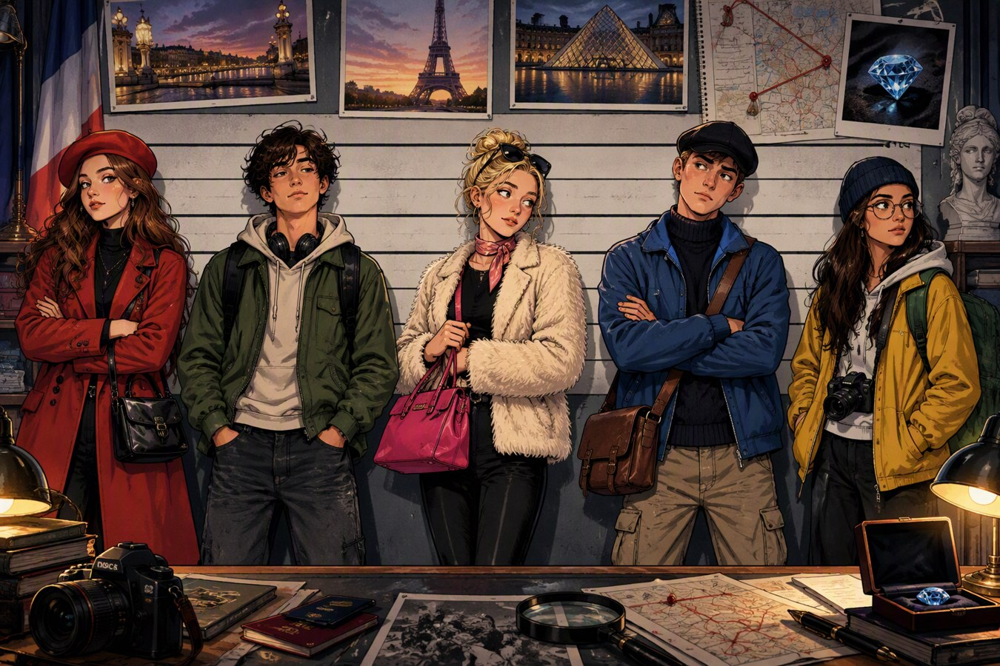

SAK 1789 • LOUVRE
Den blå diamanten er stjålet
En sjelden diamant er borte fra Louvre. Fem personer ble observert i området. Denne versjonen har mer naturlig nettleserlyd, illustrerte åsteder og lydeffekter. Les vitneforklaringer, lytt til franske meldinger og samle seks ledetråder før den endelige anklagen.
Oppdraget
- 12 språkoppgaver i fire kapitler
- Poeng og tre hint
- Fransk lyd med valgfri hastighet
- Endelig valg av tyv, gjemmested og fluktrute
- Diplom ved løst sak

Lyd bruker den beste franske stemmen som er tilgjengelig i nettleseren. Edge anbefales for mest naturlig lyd. Ingen elevdata sendes ut av siden.